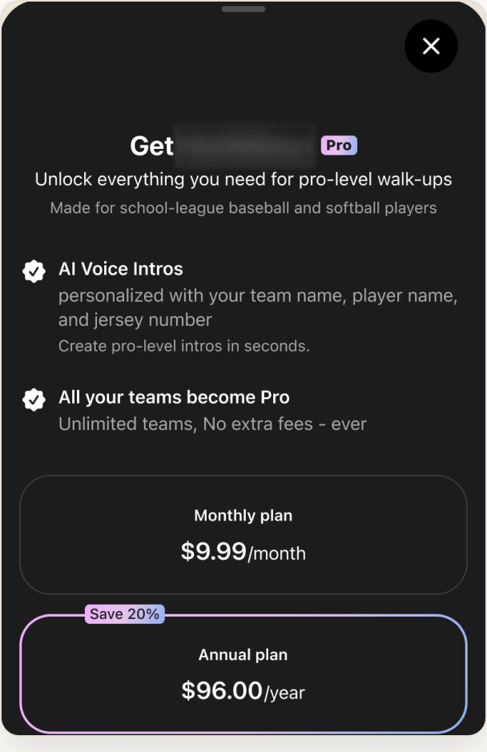
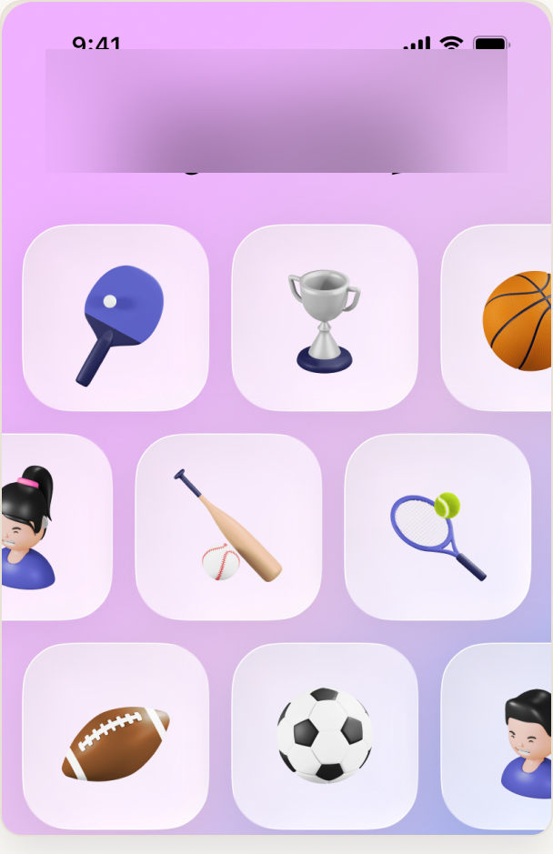
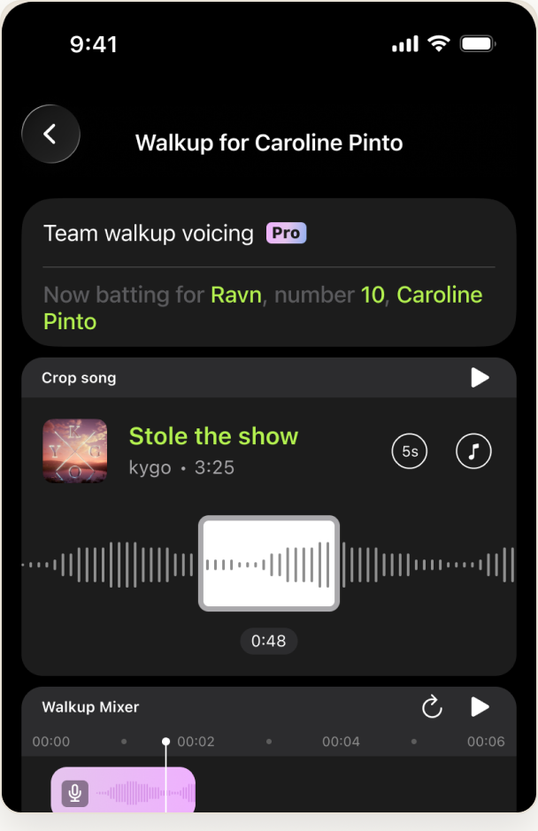

SPORTS MANAGEMENT · iOS & ANDROID
Youth Sports Audio Experience App
A mobile app that gives youth baseball players AI-generated walk-up intros, with privacy built in for minors.
THE PROBLEM
Giving every kid a "big-league" walk-up moment had to be effortless for volunteers to set up. It also had to be safe because the users are minors.
PROCESS
Designed for volunteer setup
Cut setup from 5 steps to 3 (~40% fewer).
Privacy-first for minors
No public profiles; data minimized by default.
One-tap playback
A game-day flow simple enough to run from the dugout.
AI walk-up intros
Generated announcements that sound like the real thing.
OVERVIEW
I designed a mobile experience where a volunteer can set up a team in minutes and trigger AI-generated player intros with one tap. Protecting the kids who use it guided the design.
IMPACT
5 → 3 steps
Setup simplified by ~40%.
Privacy-first
Designed for minors from the ground up.
One-tap
Game-day playback from the dugout.
SCREENS


